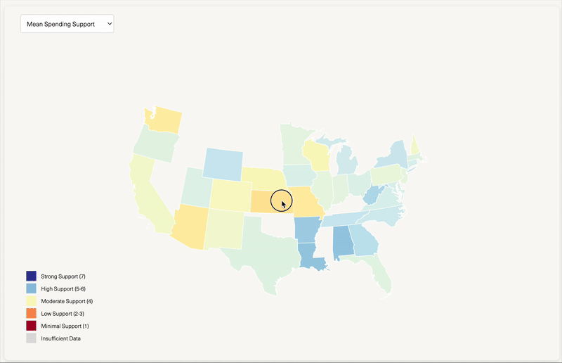
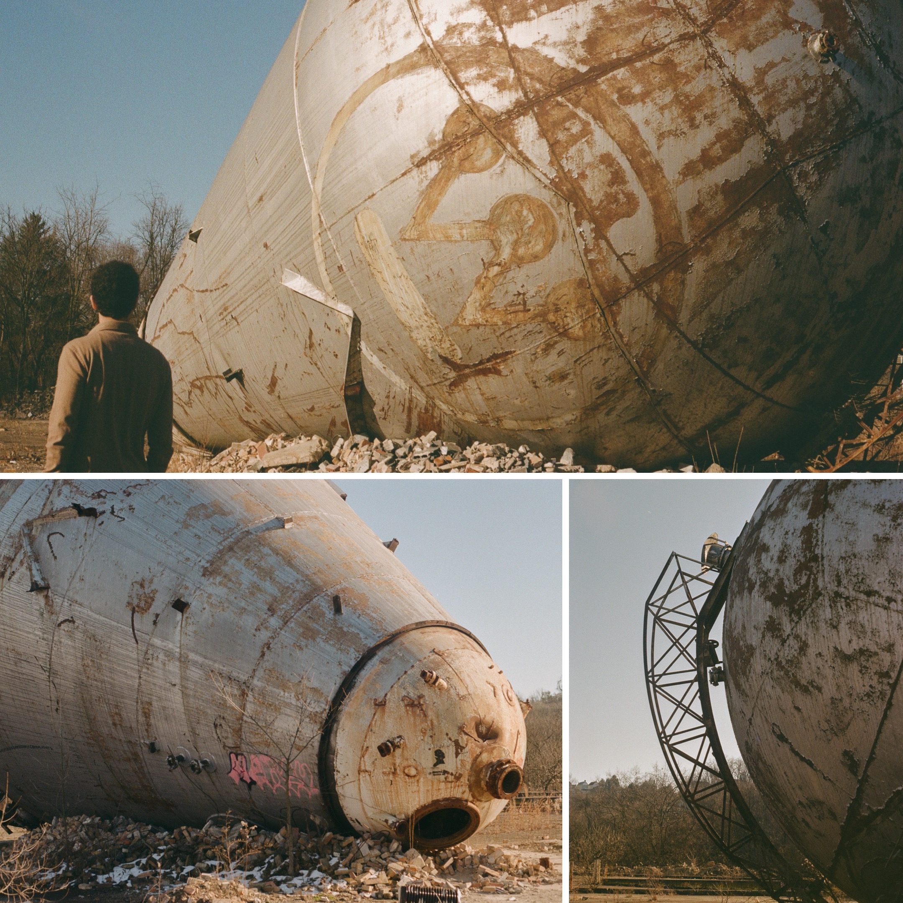
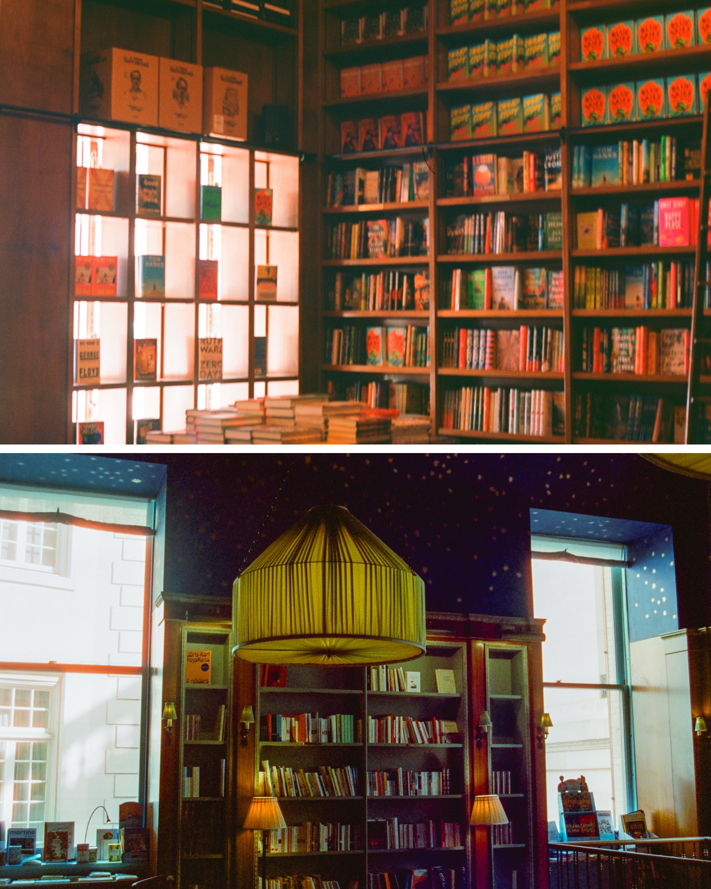
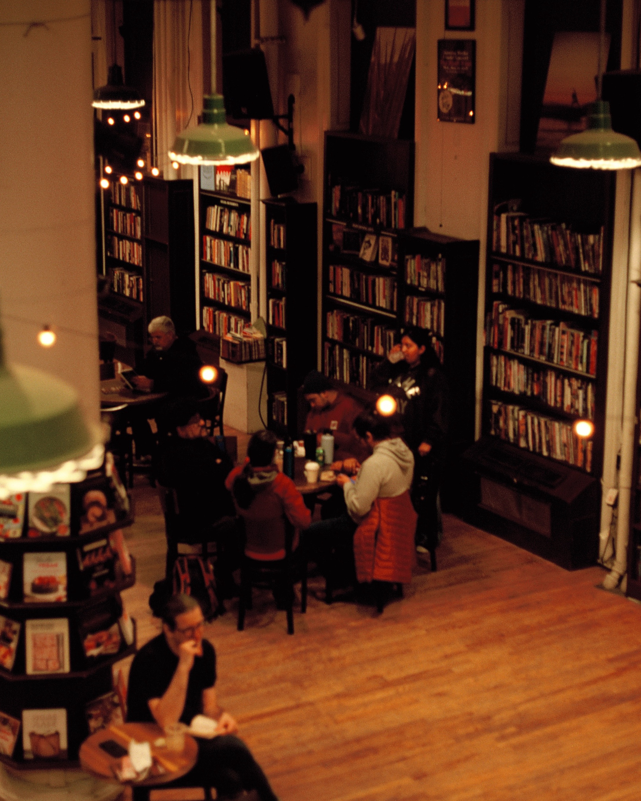
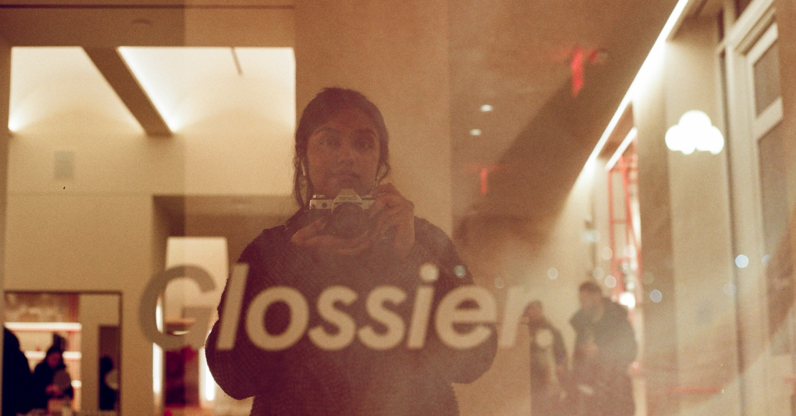

I am a User Experience Researcher and Software Engineer.
I leverage persuasive design and human-interaction methods to study technologies that are designed to change human behaviors on a societal scale.
I am passionate about writing code1, design systems, student journalism2, and film photography3. I also love books4 and am currently reading Poetics by Aristotle.
I studied Electrical and Computer Engineering at Carnegie Mellon University.
I am always reachable at lchintar[at]andrew[dot]cmu[dot]com. I am also prolific on the app formerly known as Twitter5.
Scroll up and down (or) sideways to navigate → → →
Hi there! This is a sidescrolling website.
Scroll up and down (or) sideways to navigate.
Filter FaceOff
Usage of selfie filters in social media often reinforces existing beauty standards. So we designed an Instagram game that actively encourages users to be creative in their online self-expression.
Role: UX Researcher (Fall 2021)
PERSUASIVE DESIGN USER RESEARCH USABILITY TESTING

Policy Research Note: Income and Government Spending Attitudes
How does individual income affect one's attitudes towards government spending on social services? This is a continuation of my data and policy capstone research note.
Role: Data and Policy Researcher (Summer 2024)
DATA ANALYSIS POLICY RESEARCH DATA VISUALIZATION

HCI Research: Interventions Against Hate Speech
Advisors: Profs. Hana Habib and Geoff Kaufman (CMU Human-Computer Interaction Institute)
Can UI interventions that remind users of their personal values before they post improve online civil discourse?
Role: UX Researcher (2022 - Present)
UX RESEARCH WEB DEVELOPMENT USABILITY TESTING
"A photograph is both a pseudo‑presence and a token of absence."
Susan Sontag

Westinghouse Atom Smasher, Pittsburgh // Kodak Gold 200
The world's first industrial particle accelerator, the Atom Smasher was built in 1937 on the outskirts of Pittsburgh by the legendary Westinghouse company. It went dormant in 1958. Abandoned by the company, it now lies exposed to the elements, the accumulating rust a signifier of its decay, and its surface vandalised by graffiti artists. When I first saw its ruins in February 2024, I thought of Mary Shelley's Frankenstein: "Accursed creator! Why did you form a monster so hideous that even you turned from me in disgust?".
The colors of the Kodak Gold 200 film accentuate the golden-brown tarnishing of the structure and the dystopian barrenness of the land it rests on, a harkening back to the "rust belt" region's industrial past and subsequent decline.


Bookstores, Miscellaneous // CineStill 800D, Kodak Ektar 100, Kodak Ektachrome E100 (CW from bottom to right)
Perhaps one of the greatest perks of modern life is the proliferation and sheer variety of bookstores. I derive a lot of joy from possessing my own physical copies of my favourite books. That said, I am also a proud card-carrying member of the Carnegie Library of Pittsburgh.
Seen in these photos: Albertine in New York's Upper East Side (left image, bottom) is in a Gilded age mansion and only carries French literature and translated works by French authors. Books and Books in Miami's Coral Gables (left image, top) is the city's oldest bookstore. Proceeds from book sales at Housing Works Bookstore in SoHo, New York (right image), support low-income and homeless New Yorkers living with HIV/AIDS.

Double Exposures, New York City // Fuji C200
Exposing the same piece of film twice (or more) to light to create layered images is one of my favorite techniques in film photography. It requires technical understanding of how exposures and compositions work, and pushes my creative boundaries. While there are many softwares to create layered images in post-production, making an in-camera double exposure will always be magical feeling.